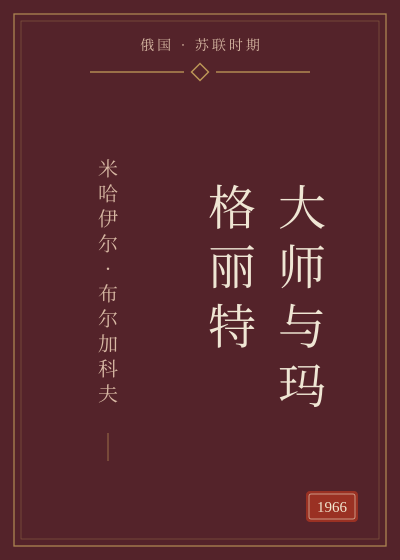
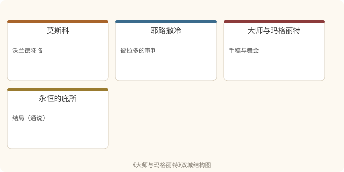

大师与玛格丽特
一、基本信息
| 作者 | 米哈伊尔·布尔加科夫 |
|---|---|
| 成书/出版 | 1928—1940年写作；1966—67年于苏联删节出版（Britannica） Mikhail Bulgakov — Encyclopaedia Britannica（百科全书） |
| 国别/地区 | 俄国 |
| 时代 | 现当代 · 苏联时期 |
| 体裁 | 长篇小说 |
| 语言 | 俄语 |

《大师与玛格丽特》双城结构图（主题·结构图）
二、创作背景
Britannica：'Witty and ribald, and at the same time a penetrating philosophical novel wrestling with profound and eternal problems'（俏皮放达、又是与永恒难题缠斗的深邃哲思小说）。
出版史：'published in the Soviet Union only in 1966–67, and then in an egregiously censored form'（死后删节版——Britannica）。
三、内容脉络
双面并置：'juxtaposes two planes of action——one set in contemporary Moscow and the other in Pontius Pilate's Judea'（Britannica）。
魔鬼线：'The central character is the Devil—disguised as Professor Woland—who descends upon Moscow with his purgative'（魔鬼沃兰德降临莫斯科——Britannica）。
大师线：禁焚的手稿与玛格丽特的飞行（通说）。
四、主要人物表
| 人物 | 身份 | 说明 |
|---|---|---|
| 沃兰德 | 魔鬼 | 化名教授（Britannica） |
| 大师 | 作家 | 手稿的作者（通说） |
| 玛格丽特 | 大师之爱人 | 魔鬼舞会女王（通说） |
| 彼拉多 | 犹太大总督 | 耶路撒冷线（通说） |
五、主题与艺术特点
- 善与恶：撒旦之善（通说）。
- 苏联社会的讽刺（Britannica：satire of Soviet society）。
- '手稿不会烧毁'——创作的不灭（名句通说待核）。
六、影响与评论
- Britannica：布尔加科夫以幽默与犀利讽刺著称；《大师与玛格丽特》为其杰作（语境）。
Mikhail Bulgakov — Encyclopaedia Britannica（百科全书） - 死后出版的世界性声誉：1966—67年删节版之后的完整化历程（通说待核）。
Mikhail Bulgakov — Encyclopaedia Britannica（百科全书）
七、阅读建议
难点
- 双城线切换。
- 苏联文艺界讽刺的真人影射（通说）。
- 钱诚译本（人民文学出版社，通说待核）。
- 高惠勤等译本（通说待核）。
先莫斯科线通读 → 回读彼拉多线 → 复看舞会章。
八、待核实
- 沃兰德随从（卡罗维耶夫/河马/阿佐泽洛）人名核对。
- 1969年法兰克福全本版细节待核。
- '手稿不会烧毁'原文核对。